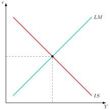
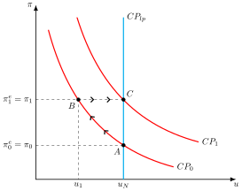

Apuntes para la oposición al Cuerpo de Diplomados Comerciales del Estado
2 Pensamiento económico (II): de Keynes a la actualidad. Referencia a la Síntesis Neoclásica, al Monetarismo, a la Nueva Macroeconomía Clásica y a los modelos Neokeynesianos de primera y segunda generación.
2.1 Introducción  1'
1'
“A largo plazo todos estaremos muertos” y “Las personas que se creen libres de influencia intelectual suelen ser esclavas de un economista muerto”1. Con estas dos frases, el economista John Maynard Keynes no solo desafió la Economía Clásica incapaz de responder a la Gran Depresión, sino que fundó la Macroeconomía moderna con su Teoría General (1936), defendiendo la intervención estatal con fines estabilizadores.
No obstante, la Economía no es una disciplina estática: cada escuela de pensamiento nace como crítica a la anterior, enfrentando los retos de su tiempo. Así, la Síntesis Neoclásica refinó el legado keynesiano, hasta que el Monetarismo lo cuestionó por su manejo de la inflación.
Más adelante, la Nueva Economía Clásica introdujo las expectativas racionales, y la Nueva Economía Keynesiana respondió incorporando imperfecciones del mercado. Este vaivén teórico revela cómo cada corriente genera nuevas herramientas y políticas para superar las limitaciones de las anteriores y, de esta forma, adaptarse a un mundo en constante cambio.
Por consiguiente, el objetivo del tema es el análisis de las doctrinas económicas a través del siguiente esquema:
Keynes.
Síntesis Neoclásica.
Monetaristas.
Nueva Macroeconomía Clásica.
Nueva Economía Keynesiana.
Otros desarrollos.
2.2 John Maynard Keynes 4'
La publicación de la Teoría General de la Ocupación, el Interés y el Dinero en 1936 supone un cambio de paradigma respecto al pensamiento ortodoxo clásico. Se inscribe en una lenta recuperación de la Gran Depresión de los años 30 en la que las fuerzas de mercado no son capaces de devolver a la economía a su nivel de pleno empleo.
Críticas al planteamiento neoclásico
Keynes plantea una crítica al planteamiento neoclásico2, ya que no son capaces de explicar las causas de la crisis ni encontrar soluciones:
Enfoque temporal(corto vs largo plazo): Keynes se distancia de los clásicos en su enfoque temporal. Mientras los neoclásicos se centran en el largo plazo, confiando en que los mercados se ajustan con el tiempo, Keynes pone el foco en el corto plazo, donde los desequilibrios como el desempleo requieren intervención inmediata. Su célebre frase “en el largo plazo todos estaremos muertos” resume su rechazo a esperar que el tiempo resuelva los problemas económicos.
Mecanismos de ajuste (salarios nominales rígidos a la baja): respecto a la efectividad de los mecanismos de ajuste, los clásicos creen que los precios y salarios son flexibles, lo que permite que los mercados se autorregulen tras un shock. Keynes, en cambio, parte de salarios nominales rígidos a la baja y, sobre todo, sostiene que aunque fuesen flexibles su reducción no garantizaría el pleno empleo, porque deprime la demanda efectiva. Por eso el sistema no se corrige por sí solo y aparece el desempleo involuntario, que no puede explicarse desde la teoría clásica.3
Ajuste por cantidades: en cuanto al mecanismo de ajuste, los neoclásicos sostienen que los precios son el canal principal para restaurar el equilibrio. Keynes discrepa: para él, los ajustes se producen a través de las cantidades, como el nivel de producción y empleo. Esto implica que la economía puede estabilizarse en un punto de baja actividad sin alcanzar el pleno empleo, algo que los clásicos no contemplan.
Ilusión monetaria: la visión del comportamiento de los agentes también marca una diferencia clave. Los clásicos suponen que los agentes solo atienden a magnitudes reales. Keynes, en cambio, admite que los trabajadores sufren “ilusión monetaria”, es decir, que reaccionan a variables nominales, como el salario nominal, sin descontar la evolución de los precios, lo que distorsiona sus decisiones económicas.4
Rechazo de la ley de Say: finalmente, Keynes rechaza la Ley de Say, que sostiene que toda oferta genera su propia demanda. Los clásicos la aceptan, confiando en que el tipo de interés y la no acumulación de dinero garantizan el equilibrio. Keynes invierte esta lógica: es la demanda efectiva la que determina la producción. Si los agentes deciden atesorar dinero o si la inversión cae, puede haber insuficiencia de demanda y desempleo persistente e involuntario.
Demanda de Dinero por Especulación: Keynes desafió la Teoría Cuantitativa del Dinero al introducir un nuevo motivo para la demanda de dinero: la especulación. La gente atesora dinero no solo para transacciones, sino también como una forma de riqueza, lo que rompe con la dicotomía clásica5 y con el supuesto clásico de la neutralidad del dinero, explicando por qué la política monetaria puede tener efectos reales en la economía.
A continuación analizaremos sus implicaciones en el mercado de trabajo, bienes y de dinero para, finalmente, introducir sus recomendaciones de política económica.
Mercado de trabajo
Keynes interpreta el equilibrio neoclásico del mercado de trabajo como un “caso especial que no es típico en la sociedad en la que vivimos”. Es un caso especial que corresponde a una situación en la que la demanda es suficientemente elevada como para absorber toda la producción.
Así, la insuficiencia de demanda durante el periodo de la Gran Depresión llevaba a un nivel de desempleo involuntario masivo que no era el nivel de empleo compatible con el pleno empleo neoclásico.
Demanda de trabajo
Keynes mantiene los supuestos macroeconómicos de la función de producción y acepta la demanda de trabajo tal y como la postulan los clásicos. Se demanda trabajo hasta el punto en el que el salario nominal se iguala al valor de la productividad marginal del trabajo, es decir, que depende negativamente del salario real: \[L_{D}=f\left(\dfrac{W}{P}\right) \tag{2.1}\]
Oferta de trabajo
La demanda agregada determina la producción y, a través de la función de producción se obtiene el nivel de empleo
El salario nominal se determina vía negociación.
El trabajador de Keynes se guía por el salario nominal, que es sobre el que puede influir la negociación colectiva, por lo que tiene ilusión monetaria.
De este modo, si caen los precios, caerá la cantidad vendida y por tanto la demanda de trabajo. Con ilusión monetaria no se aceptará una reducción del salario nominal, ya que Keynes argumenta que existen salarios rígidos a la baja.
Esto dará lugar a desempleo involuntario, ya que el mercado de trabajo no podrá vaciarse.
Por lo tanto, la oferta de trabajo se mantendrá constante en el salario mínimo nominal mientras no se supere un nivel de empleo \(L_{m}\), y a partir del mismo crecerá con el nivel de empleo: \[L_{S}=W_{m}+f\left(L\right),\quad f^{\prime}>0\text{ si }L>L_{m},\ f=0\text{ si }L\leq L_{m} \tag{2.2}\]
Solución
Según Keynes, en una situación con recursos ociosos (que, según él, será lo más frecuente), una política económica expansiva que estimule la demanda agregada podrá aumentar los niveles de empleo y de producción. La ilusión monetaria de los trabajadores permitiría a las empresas aumentar los precios en mayor proporción que los salarios nominales (por lo que los salarios reales disminuirían), y esto permitiría aumentar el empleo y la producción.
Frente al remedio neoclásico de bajar los salarios nominales para reducir el paro, Keynes plantea que el efecto sobre el empleo es incierto, porque depende de sus repercusiones sobre los determinantes de la Demanda Efectiva. Por un lado, una caída de salarios reduce costes y precios, abarata el tipo de interés y estimula la inversión. Por otro, redistribuye renta de los trabajadores –con alta propensión a consumir– hacia los rentistas, encarece el valor real de las deudas y puede generar expectativas de deflación futura. En una economía deprimida, Keynes concluye que estos efectos negativos tienden a dominar, por lo que rechaza la flexibilidad salarial como vía de salida de la crisis.
Este razonamiento constituye el núcleo del Principio de la Demanda Efectiva: el nivel de empleo y de producción no lo fija el mercado de trabajo por sí solo, sino el punto en el que la Demanda Agregada esperada por las empresas iguala a los ingresos mínimos que estas exigen para contratar ese volumen de empleo. Por eso el desempleo resultante es involuntario: hay trabajadores dispuestos a trabajar al salario real vigente, o incluso a uno algo menor, que no encuentran empleo, y no pueden hacer nada para remediarlo porque la insuficiencia procede de la Demanda Agregada, que escapa a su control.6
Mercado de bienes
Mientras que en el modelo neoclásico la variable que se determinaba en el sector real era el tipo de interés7, en el enfoque keynesiano las que se determinan son la renta y el nivel general de precios.
Demanda agregada
La demanda agregada depende de 3 componentes principales \[DA=C+I+G \tag{2.3}\] que se analizarán a continuación:
Consumo8, \(C\), considerado por Keynes el fin último de la actividad económica, donde el principal determinante del consumo y el ahorro es la renta absoluta disponible del período, con un componente autónomo (consumo mínimo o de subsistencia) y otro en función de la renta disponible: \[C=C_{0}+c\cdot Y^{d} \tag{2.4}\] muy poco influido por los tipos de interés, ya que depende de la renta actual, y donde la propensión media al consumo, \(PMe_{C}\), es decreciente con la renta (ahorro como bien de lujo), y la propensión marginal a consumir, \(PMg_{C}\), es decir, la parte de cada euro adicional de renta disponible que se destina a consumo (el parámetro \(c\)), se sitúa entre 0 y 1. Así, al existir consumo autónomo, la propensión media será superior a la marginal, \(PMe_{C}>PMg_{C}\), y el ahorro será un residuo del consumo, al contrario de lo que afirmaban los clásicos (para ellos el consumo era residuo del ahorro).
Inversión, \(I\), para Keynes la inversión es una variable fundamental, determinada por la Eficiencia Marginal del Capital (\(EMK\)), que recoge los rendimientos que esperan obtener los empresarios, y, sobre todo, por su estado de ánimo, que Keynes llamó “animal spirits”, es decir, el impulso espontáneo a actuar en lugar de esperar en un contexto de incertidumbre en el que no es posible calcular probabilidades.9 Estos son un componente autónomo y volátil que da a la inversión un carácter impredecible, algo a lo que Keynes concedía mucha más importancia que al tipo de interés. Así, la inversión efectiva y la deseada no siempre coinciden, generando desequilibrios. Por lo que la inversión dependerá de un componente autónomo y de un componente endógeno: \[I=I_{0}-b\cdot r \tag{2.5}\]
Gasto Público, \(G\), se considera una variable exógena, al igual que los clásicos10. \[G=G_{0} \tag{2.6}\]
Teoría del multiplicador
Agrupando los términos y suponiendo impuestos proporcionales, se obtiene el multiplicador keynesiano del gasto público, \(\alpha_{G}\), que mide cuánto aumenta la renta por cada unidad de aumento exógeno de un componente de la demanda agregada. Su valor es mayor que 1, dado que la propensión marginal a consumir, \(c\), y el tipo impositivo, \(\tau\), están entre 0 y 1:11 \[Y=\underbrace{\dfrac{1}{1-c\left(1-\tau\right)}}_{\alpha_{G}}\cdot\left(A_{0}-b\cdot r\right) \tag{2.7}\] así, el efecto multiplicador se deriva de la idea de que el gasto de una persona se convierte en el ingreso de otra, lo que genera una reacción en cadena12.
De este marco se deriva una implicación contraintuitiva, la paradoja del ahorro: si todos los hogares intentan ahorrar más a la vez, el ahorro agregado no aumenta, porque la caída del consumo reduce la demanda agregada y la renta hasta que el ahorro vuelve a igualar a la inversión. Si la inversión depende a su vez de la renta, el ahorro total puede incluso disminuir.13 Domina así el lado de la demanda: es la renta –y no el tipo de interés, como en el modelo clásico– la verdadera variable de ajuste keynesiana.
Mercado de dinero
En el análisis de Keynes el dinero, además de ser medio de cambio, es un depósito de valor. Los individuos atesoran saldos monetarios como forma de ahorrar. La demanda de dinero estará influida por tanto por el tipo de interés, que también actúa sobre el sector real. En consecuencia, se rompe la dicotomía clásica y la neutralidad del dinero.
Keynes argumentaba que los individuos demandan dinero por tres motivos principales.
Motivo de transacción, donde se demanda dinero para realizar pagos cotidianos, y su demanda está en función de la renta.
Motivo de precaución, por el que se guarda dinero para hacer frente a imprevistos, también en función de la renta.
Motivo especulación, siendo este motivo la gran innovación de Keynes. Así, se relaciona con la función del dinero como depósito de valor. La demanda de dinero por este motivo está inversamente relacionada con el tipo de interés: si los tipos son bajos, los individuos anticipan que subirán, lo que devaluará el precio de los bonos. Por tanto, optan por atesorar dinero en efectivo para evitar pérdidas de capital. Esta demanda es muy inestable, ya que depende de las expectativas, muy volátiles, de los tenedores de riqueza sobre la evolución futura del tipo de interés.
En resumen, la demanda de dinero keynesiana dependerá positivamente de la renta y negativamente del tipo de interés: \[M_{D}=f\left(Y,r\right) \tag{2.8}\]
Esta visión rompió la dicotomía clásica y le dio a la política monetaria un papel activo en la gestión de la economía.
Rechazo de la ley de Say
Si el dinero tiene una función de depósito de valor, atesorar dinero no es irracional, existiendo la posibilidad que los agentes no gasten íntegramente su renta en consumo e inversión llevando a que la demanda sea menor que la producción lanzada al mercado y no cumpliéndose así la Ley de Say14.
Implicaciones de política económica
Las políticas de demanda sí son efectivas para alterar la renta:
Política fiscal: un aumento del gasto público estimula directamente la demanda agregada. Además, va a ser muy efectiva por el efecto de los multiplicadores.
Política monetaria: una política monetaria expansiva que reduzca el tipo de interés estimula indirectamente la demanda agregada al aumentar la inversión.
De hecho, esta dinámica de la política monetaria es lo que da nombre a su obra de “The General Theory of Employment, Interest, and Money”: la oferta de dinero afecta al tipo de interés, lo cual afecta a la inversión y ésta, al empleo. El término “General” se debe a que Keynes entiende que lo anterior solo funciona si no hay pleno empleo (y, para él, esta situación de recursos ociosos será la situación general, mientras que el pleno empleo es, dirá, sólo un caso particular).
No obstante, Keynes señala que la política monetaria va a ser menos efectiva que la fiscal, ya que se da lo que él denomina los “2 eslabones débiles”:
Demanda de inversión muy poco sensible al tipo de interés, ya que las expectativas son muy volátiles (componente autónomo, animal spirits).
Demanda de dinero muy sensible al tipo de interés (motivo especulación), de modo que un aumento de la oferta monetaria apenas reduce el tipo de interés15.
No obstante, dado el carácter rupturista del modelo keynesiano se va a ver sujeto a una continua revisión para superar sus limitaciones y tratar de aunarlo con el pensamiento clásico, surgiendo así la Síntesis Neoclásica.
2.3 Síntesis Neoclásica 3'
La SNC se refiere a la doctrina económica que aparece en EE.UU a principios de los años 40 y que dominaría el pensamiento económico hasta los años 70, cuando tomó el relevo el monetarismo. Fue Paul Samuelson con su libro “Economía”, 1955, quien dio a esta doctrina el sentido de síntesis, ya que se puede considerar:
En el corto plazo existirían rigideces de precios y salarios de modo que el modelo keynesiano resulta adecuado para analizar las fluctuaciones a corto plazo.
En el largo plazo los precios y salarios serían flexibles y el modelo clásico y neoclásico permitiría estudiar las cuestiones económicas de largo plazo.
A continuación, analizaremos los principales aportes de la SNC.
Modelo IS-LM
La Síntesis Neoclásica utiliza como elemento central el modelo IS-LM16, formulado por Hicks (1937) en su artículo “Mr. Keynes and the Classics” como respuesta a la Teoría General, y ampliado después por Modigliani (1944) y por Hansen (1953), quien rebautizó el modelo IS-LL original de Hicks como IS-LM, denominación que ha perdurado hasta hoy.
El modelo IS-LM analiza el equilibrio en una economía cerrada con precios rígidos a partir de dos curvas como se observa en la Figura 2.1:
Curva IS: que representa las combinaciones de tipo de interés y renta tales que el mercado de bienes está en equilibrio.
Curva LM: que representa las combinaciones de tipo de interés y renta tales que el mercado de dinero está en equilibrio.

La pendiente de la curva IS dependerá de la sensibilidad de la inversión al tipo de interés y la de la LM de la sensibilidad de la demanda de dinero al tipo de interés. En función de estas sensibilidades la política fiscal y la política monetaria tendrán una mayor o menor capacidad de afectar al output.
Implicaciones de política económica
Los principales rasgos generales de la Síntesis Neoclásica, respecto a la política económica, son:
La inestabilidad del sector privado y la existencia de perturbaciones justifican la intervención del estado con políticas de estabilización.
El crecimiento y la suavización de las fluctuaciones cíclicas son los objetivos de la política económica.
El uso mixto de la política fiscal y de la política monetaria, mediante fine tunning, permitiría alcanzar el pleno empleo y estabilizar las fluctuaciones cíclicas.
Perfeccionamiento de los elementos keynesianos
La Síntesis Neoclásica trata, además, de perfeccionar los elementos principales del análisis keynesiano:
Demanda de consumo, ante la evidencia empírica de Kuznets17:
Teoría de la renta relativa: la teoría de Duesenberry postula que el consumo depende de la renta relativa, es decir, de la renta del individuo en comparación con la de su grupo social de referencia y con la renta más alta que haya alcanzado en el pasado. Este último elemento genera un efecto trinquete que explica por qué el consumo es rígido a la baja.18 Sin embargo, esta teoría se diferencia de otras al no considerar la riqueza ni la renta vitalicia como variables explicativas.
Teoría del ciclo vital: la Teoría del Ciclo de Vida de Modigliani postula que el consumo depende de la renta vitalicia esperada. Los individuos buscan una senda de consumo estable a lo largo de su vida, ahorrando en las etapas de altos ingresos para desahorrar en las de bajos ingresos (como la jubilación). El ahorro es clave para suavizar el consumo intertemporal.
Demanda de inversión, destacando:
Teorías del acelerador: la teoría del acelerador, cuyo principio se remonta a Aftalion (1909) y J. M. Clark (1917) y cuyas versiones flexibles se desarrollan entre los años cuarenta y sesenta, postula que la inversión de las empresas responde directamente a los cambios en la demanda. Si la demanda aumenta, las empresas invierten para ampliar su capacidad productiva y satisfacerla: \(I=v\cdot\Delta Y\). Así, la inversión es proporcional a la variación de la demanda, \(\Delta Y\), y el factor de proporcionalidad, \(v\), es el coeficiente acelerador, que coincide con la relación capital-producto deseada y suele ser mayor que 1.19 Con estas teorías también se explicarán los ciclos económicos.
La \(q\) de Tobin: fundamenta la inversión keynesiana al relacionar el valor de mercado de una empresa, \(VME\), con el coste de reposición de su capital, \(CRK\), es decir: \(q=\frac{VME}{CRK}\). Si \(q>1\), la empresa invertirá porque su capital vale más en el mercado que lo que cuesta reponerlo. Esto impulsa la expansión, vinculando las expectativas del mercado, en las que influyen los “animal spirits”, con las decisiones de inversión.
Demanda de dinero: profundiza en el modelo de demanda de dinero de Keynes tratando de mejorar sus fundamentos, y explicar la creciente evidencia empírica disponible sobre la demanda de dinero:
Motivo transacción: modelo de inventarios, el modelo Baumol (1952) y Tobin (1956) trata de explicar la demanda de dinero por motivo de transacción mediante modelos de gestión de inventarios, asumiendo que los agentes minimizan el coste de mantener los saldos monetarios necesarios para realizar transacciones.
Motivo precaución: modelo de costes de ruptura, El modelo de Whalen (1966) parte del enfoque de Baumol y Tobin, pero introduce la existencia de incertidumbre sobre los gastos e ingresos, lo que genera unos costes de ruptura de no tener suficientes saldos monetarios, y permite, así, analizar el motivo de demanda de dinero por precaución.
Motivo especulación: modelo de cartera, Tobin (1958) trata de fundamentar la demanda de dinero por motivo de especulación, considerando que es resultado de las decisiones de optimización de los agentes sobre su cartera en un entorno de incertidumbre suponiendo que los agentes eligen entre dos activos el dinero que es libre de riesgo y ofrece rendimiento nulo y los bonos qué son activos con riesgo y rendimiento positivo. El resultado es que la demanda de dinero por motivo de especulación depende negativamente del tipo de interés.
Curva de Phillips
Alban William Phillips publicó en 1958 un trabajo donde mostraba la relación entre el desempleo y la variación de los salarios monetarios en Reino Unido entre 1861 y 1957 (publicado en la revista Economica). La relación derivada del análisis empírico era negativa, no lineal (y con rigideces salariales a la baja) con muy buen ajuste a los datos observados.
Lipsey es el primero en ofrecer una explicación teórica de la relación empírica en los 60s. Para ello se basa en dos supuestos fundamentales:
Una relación lineal positiva entre el crecimiento de los salarios y el exceso de demanda de trabajo
Una relación no lineal negativa entre el exceso de demanda de trabajo y el desempleo, similar a la Curva Beveridge.
Combinando ambos supuestos se podía expresar el incremento en los salarios como una función del nivel de desempleo \[\pi^{w}=f\left(u\right) \tag{2.9}\]
Posteriormente, Samuelson y Solow (1960) estiman la Curva de Phillips para EE.UU y proponen la existencia de una relación negativa no lineal (trade-off) entre inflación y desempleo, que será la Curva de Phillips que se empieza a plantear desde ese momento \[\pi=f\left(u\right) \tag{2.10}\]
Samuelson y Solow sugieren que esta relación puede explotarse como un “menú” de política económica, eligiendo la combinación de inflación y desempleo preferida para cada periodo20. De esta forma, sería posible alcanzar menores tasas de desempleo de forma permanente mediante impulsos reiterados de la demanda agregada, a cambio de aceptar también de forma permanente una mayor inflación y pasar, como se observa en la Figura 2.2, del punto A al punto B.
Esta confianza en la posibilidad de explotar de forma estable el trade-off entre inflación y desempleo no tardaría, sin embargo, en ser puesta en entredicho por una nueva generación de economistas —los monetaristas— que cuestionarían tanto sus fundamentos teóricos como su capacidad para explicar la estanflación de los años 70.
2.4 Monetaristas 3'
El monetarismo21 es una escuela que surge en los 50 y 60 encabezada por Milton Friedman, uno de los miembros más destacados de la Escuela de Chicago y Premio Nobel en 1976.
Antes de entrar en sus ideas sustantivas, conviene señalar la impronta metodológica de Friedman: en su ensayo “The Methodology of Positive Economics” (1953), defendió la primacía de la economía positiva sobre la normativa y la tesis de la irrelevancia de los supuestos –una teoría debe juzgarse por el poder predictivo de sus conclusiones, no por el realismo de sus premisas–, en contraposición a autores como Gunnar Myrdal, para quien los conceptos económicos están inevitablemente cargados de juicios de valor. Este instrumentalismo metodológico, de raíz popperiana, es el que sustenta el enfoque empírico con el que Friedman construirá su crítica del edificio keynesiano.
Principales ideas del monetarismo en contraposición con la SNC:
Flexibilidad de precios y salarios como una aproximación aceptable de la realidad.
La oferta agregada es la principal determinante de los resultados económicos, además de introducir el concepto de la tasa natural de paro (TNP)
La inflación es un fenómeno monetario, causado por un aumento de la oferta monetaria superior al crecimiento de la producción, de acuerdo con la ecuación cuantitativa \(MV=PY\), donde la velocidad de circulación \(V\) es estable en el corto plazo.
La política monetaria solo tiene efecto sobre las variables reales a corto plazo. La demanda de dinero será relativamente estable, como veremos, al depender de muchas más variables.
Las fluctuaciones económicas han sido provocadas por política económica imprudente, mientras que para la SNC la economía está sujeta a shocks erráticos y es inestable.
Para los monetaristas la política monetaria es más eficaz que la política fiscal, para la Síntesis al revés.
Revisión de los componentes keynesianos
Así, los monetaristas van a realizar una importante revisión de los componentes keynesianos:
Demanda de consumo: La crítica monetarista se materializará en la Teoría de la Renta Permanente (1957). Esta teoría parte de la hipótesis de que los agentes buscan maximizar intertemporalmente su utilidad. En consecuencia, buscarán suavizar su consumo a lo largo del tiempo y éste pasará a depender de la renta permanente, definida como “aquel flujo de renta que puede ser mantenido perfectamente en el tiempo y que puede ser consumido íntegramente sin afectar a la fuente de riqueza de la que deriva”. Así, la renta permanente implica consumir los intereses de la riqueza22: \[Y^{P}=r\cdot W \tag{2.11}\] por lo tanto, el consumo, será proporcional a la renta permanente, reflejando el deseo del individuo de suavizar el consumo: \[C^{P}=k\cdot Y^{P}\]
Además, la renta permanente no es observable. De ahí que, según Friedman, los individuos la tengan que estimar, y lo hacen sobre la base de la hipótesis de las expectativas adaptativas (HEA), según la cual los agentes corrigen su previsión en cada periodo en una fracción del error cometido en el periodo anterior, de modo que la previsión acaba siendo una media ponderada de los valores pasados. Aplicada al consumo, el individuo estima su renta permanente observando sus rentas pasadas.23Demanda de inversión: para los monetaristas, la inversión depende fundamentalmente del tipo de interés, ya que, al ser racionales, basan sus decisiones en la rentabilidad. La inversión es mucho más estable.
Demanda de dinero: Friedman concibe el dinero como un bien más, de manera que su demanda no tiene que ser justificada por razones particulares (como hacían los keynesianos):
Así, la demanda de dinero dependerá, como la de cualquier otro activo, de 3 factores principales:
La riqueza del individuo, medida por la renta permanente, y que, según los monetaristas, será el factor determinante de la demanda de dinero. De ahí que la demanda de dinero monetarista sea muy estable (a diferencia de la keynesiana), ya que la renta permanente lo es.
La rentabilidad del dinero en relación a otros activos financieros y reales.
Las preferencias de los individuos.
Concretamente, la demanda de dinero dependerá positivamente de la renta permanente, del nivel general de precios y de la proporción de las rentas del trabajo –las rentas del trabajo son, generalmente, más inciertas que las provenientes de activos financieros, por lo que los agentes desearán mantener más dinero por motivo precaución–, y negativamente de la rentabilidad de otros activos y de las expectativas de inflación \[M^{D}=f(\underset{+}{Y^{P}},\underset{+}{\dfrac{W_{L}}{W}},\underset{-}{r},\underset{-}{\pi^{e}})\cdot P \tag{2.12}\]
De esta forma, se rechazarán los 2 eslabones débiles de Keynes, por lo que la política monetaria será más efectiva que la fiscal aunque solo en el corto plazo. A largo plazo, las recomendaciones de política monetaria son de uso reglado y no discrecional, ya que el uso discrecional solo llevará a aumentos de la inflación, cumpliéndose así la tesis aceleracionista de la inflación.
Curva de Phillips aumentada con expectativas
La segunda fase del monetarismo de Friedman critica a la Síntesis Neoclásica por su enfoque en la curva de Phillips. Argumenta que la relación entre inflación y desempleo es solo temporal, ya que los agentes económicos negocian los salarios nominales basándose en sus expectativas de inflación, preocupándose por los salarios reales.
Además, Friedman introduce el concepto de tasa natural de paro (TNP), es decir, el nivel de desempleo que existe cuando el mercado de trabajo está en equilibrio y las expectativas se cumplen, determinado por las características estructurales de los mercados de trabajo y de bienes y no por la demanda agregada24. De esta forma, intentos por reducir el desempleo por debajo de esta tasa solo causan una inflación acelerada. Este modelo explica la estanflación de los años 70, un fenómeno que la curva original era incapaz de prever.
Así, la curva de Phillips aumentada con expectativas, en términos de precios, se puede expresar como la inflación esperada más un múltiplo de la diferencia entre la tasa natural de paro y la tasa de paro \[\pi=\pi^{e}+\alpha\cdot\left(u_{n}-u\right) \tag{2.13}\] donde \(\alpha\) recoge la sensibilidad de la inflación a la brecha entre ambas tasas de paro. Por lo tanto, si la tasa de desempleo es inferior a la tasa natural de paro, la inflación será superior a la esperada.
Ahora, tal y como se observa en la Figura 2.3:
A medida que los trabajadores perciban que sus salarios reales no han aumentado adaptarán sus expectativas de inflación, desplazando la curva de Phillips hacia arriba. En el punto \(C\), la economía se encuentra en la tasa natural de paro, pero la tasa de inflación es superior a la que existía inicialmente.
A largo plazo, a medida que los trabajadores revisan sus expectativas e incorporan los errores cometidos, la curva de Phillips será vertical en la tasa natural de desempleo, que se obtiene uniendo los puntos \(A\) y \(C\).

El propio mecanismo de expectativas adaptativas que sostiene esta versión monetarista de la Curva de Phillips, sin embargo, pronto sería cuestionado por carecer de microfundamentos y por permitir errores sistemáticos y persistentes en los agentes: de esa crítica surgiría la Nueva Macroeconomía Clásica, que sustituiría las expectativas adaptativas por expectativas racionales.
2.5 Nueva Macroeconomía Clásica 3'
La Nueva Macroeconomía Clásica (NMC) transformó la teoría económica al introducir expectativas racionales, microfundamentos rigurosos y formalización matemática. Sustituyó las relaciones keynesianas ad-hoc por un agente representativo que optimiza intertemporalmente.
Lucas, en su influyente crítica de 1976, mostró que los modelos econométricos tradicionales fallan al evaluar políticas, ya que los agentes, al anticiparlas racionalmente, modifican su comportamiento. Esto implica que los parámetros estimados no son constantes, lo que invalida su capacidad predictiva ante cambios en las reglas de política económica.
Hipótesis de las expectativas racionales
De esta forma, la Nueva Macroeconomía Clásica introduce la hipótesis de expectativas racionales (HER) y critica la HEA de Friedman porque permite al Gobierno “engañar” sistemáticamente a los agentes económicos a corto plazo.
Bajo HER, los agentes ya no cometen errores sistemáticos porque utilizan eficientemente toda la información de la que disponen. Por lo tanto, el valor esperado de las variables económicas se halla mediante la esperanza de las variables condicionada a toda la información disponible en el momento de formular las expectativas, \(\Omega_{t-1}\), utilizando eficientemente dicha información \[P^{e}_{t}=\mathbb{E}\left(P_{t}|\varOmega_{t-1}\right) \tag{2.14}\] Por lo tanto, el valor de la variable en el momento \(t\) será igual al valor esperado de la variable más un término de error o ruido blanco
\[P_{t}=P^{e}_{t}+\varepsilon \tag{2.15}\]
Así, Robert Lucas fue el primer economista en aplicar a la Macroeconomía la HER, formulada por John Muth en 1961, y concluyó que, al combinarla con la teoría de la tasa natural de paro, los errores de previsión solo pueden tener un carácter aleatorio, lo que dio origen a la NMC.
Curva de oferta de Lucas
Bajo estos supuestos, se obtiene la curva de oferta de Lucas, según la cual la producción, \(y_{t}\), solo se aparta de su nivel natural, \(y_{N}\) (asociado a la tasa natural de desempleo), cuando el nivel de precios difiere del esperado, es decir, cuando hay errores en las expectativas. El parámetro \(\theta\) mide la intensidad de esa respuesta y depende de la variabilidad relativa de las perturbaciones: el productor no sabe si una subida de su precio refleja un cambio en la demanda de su mercado o inflación general, y cuanto más frecuentes sean las perturbaciones específicas frente a las generales, más atribuirá la subida a su mercado y más aumentará la producción: \[y_{t}=y_{N_{t}}+\theta\left(P_{t}-P^{e}_{t}\right) \tag{2.16}\]
es decir, la producción agregada solo se desvía de su nivel natural por variaciones no anticipadas del nivel de precios. Por consiguiente, frente a cambios de precios anticipados, la curva es vertical incluso en el corto plazo, y solo las sorpresas de precios le dan pendiente positiva.25
Curva de Phillips
Además, considerando la ley de Okun26 según la cual existe una relación estable y negativa entre desempleo y PIB, la curva de oferta agregada de Lucas se puede interpretar como una representación alternativa de la curva de Phillips aumentada con expectativas, por lo que reorganizando la expresión: \[u_{t}=u_{N_{t}}-\dfrac{1}{\alpha}\cdot\left(\pi_{t}-\pi^{e}_{t}\right),\quad\alpha>0 \tag{2.17}\]
Implicaciones de política monetaria
Estos desarrollos tienen una serie de implicaciones de política económica:
Proposición de Inefectividad de la Política, formulada por Sargent y Wallace (1975): bajo expectativas racionales y vaciado continuo de mercados, cualquier regla de política monetaria sistemática –anticipable por los agentes– es neutral incluso a corto plazo, afectando solo a los precios; únicamente las sorpresas monetarias no anticipadas tienen efecto real sobre la producción.
Inconsistencia dinámica de la política monetaria, introducida por Kydland y Prescott (1977) y aplicada específicamente al ámbito monetario por Barro y Gordon (1983): una política óptima ex ante puede dejar de serlo ex post, de modo que la autoridad tiene incentivos a desviarse de lo anunciado una vez que los agentes ya han actuado en consecuencia. Por ejemplo, tras anunciar una política antiinflacionista que modera las expectativas de precios, la autoridad se ve tentada a generar una sorpresa inflacionista para impulsar el empleo, aunque unos agentes racionales anticiparán ese incentivo y ajustarán sus expectativas de partida en consecuencia. Concretamente, si la política monetaria es discrecional, la autoridad monetaria tendrá incentivos para incrementar el nivel de producción de manera ex-post, elevando el nivel de inflación. No obstante, aunque la economía se encuentre dinámicamente en el equilibrio, esta experimentará la misma tasa natural de desempleo pero un sesgo inflacionista e inflación superiores. Por consiguiente, el bienestar de dicha sociedad será inferior –dado que la inflación y el desempleo son males–, siendo clave para la NMC el establecimiento de reglas27.
Equivalencia Ricardiana, David Ricardo planteó el hipotético caso de que deuda e impuestos fuesen sustitutivos. Barro (1974) recuperará esta idea y defiende que el efecto expansivo de un aumento del gasto público será independiente de cómo se financie, vía impuestos o vía déficit, pues los agentes no perciben la deuda como riqueza neta (es decir, no hay ilusión de deuda), ya que conocen la restricción intertemporal del Gobierno y saben que, tarde o temprano, tendrá que satisfacerla, por lo que aumentará los impuestos en el futuro.
Desagradable aritmética monetarista, desarrollada por Sargent y Wallace (1981), es una situación en la que la política monetaria no es capaz de controlar la inflación por culpa de una política fiscal sistemáticamente expansiva. Se llega a una situación en la que la financiación del déficit público a través de deuda resulta más inflacionista que su monetización. Así, en última instancia, y en el contexto particular de este modelo, la inflación sería más un fenómeno fiscal que un fenómeno monetario, poniéndose de manifiesto la interrelación entre la política monetaria y la fiscal. Para Sargent y Wallace, si la monetización del déficit en el futuro es inevitable, cuanto más tarde en realizarse peor, ya que mayor será el volumen de intereses y mayor, por tanto, la necesidad de monetización.
Por consiguiente, abogarán por políticas fiscales de oferta, no de demanda, y una política monetaria reglada.
Teoría de los ciclos de la NMC
Basándose en su teoría de la oferta, Lucas postula que los shocks monetarios inesperados confunden a los agentes con información imperfecta, quienes los interpretan como cambios en los precios relativos. Esto lleva a un aumento temporal de la oferta y el empleo (expansión). Al corregir su error, los productores reducen la producción, generando una recesión.
Sin embargo, esta teoría solo explica ciclos económicos de corta duración. Así, la teoría monetaria de los ciclos fue superada por la teoría de los ciclos reales.
Teoría de los ciclos reales
La teoría de los ciclos reales de Kydland y Prescott (1982) explica las fluctuaciones económicas como la respuesta óptima de los agentes a perturbaciones reales, sobre todo de productividad, y transformó de manera revolucionaria la teoría de ciclos y el análisis macroeconómico al inaugurar los modelos DSGE28. Estos se basan en 2 aspectos:
Introducen una fuente de perturbación real (inicialmente, shocks de productividad y, posteriormente, otras fuentes reales tales como el gasto público).
Asumen mecanismos de optimización intertemporal de consumo y ocio. De este modo, se acaba con la idea de que las recesiones son “malas” y las fases de expansión “buenas”: las recesiones no serán deseables para los agentes, pero son el resultado de su conducta maximizadora, por lo que los ciclos son un fenómeno de equilibrio.
Implicaciones de política económica
El ciclo es, en todo momento, un fenómeno Pareto eficiente, ya que es consecuencia de las decisiones óptimas de los agentes, siendo todo el desempleo voluntario, por lo que no es recomendable ni deseable una política económica estabilizadora. Esta teoría tiene una gran fundamentación microeconómica a la vez que es la primera en identificar la causa de los ciclos como algo ajeno a la Política Económica.
Precisamente esa conclusión de eficiencia y esa ausencia de espacio para la política económica resultaban difíciles de compatibilizar con fenómenos tan persistentes como el desempleo involuntario prolongado: aceptando la Hipótesis de Expectativas Racionales, la Nueva Economía Keynesiana buscaría recuperar un papel activo para la política económica introduciendo competencia imperfecta y rigideces de precios y salarios con microfundamentos propios.
2.6 Nueva Economía Keynesiana 3'
Sin embargo, la NMC fue pronto criticada, especialmente por su supuesto extremo de que los mercados están continuamente en equilibrio, por lo que no lograban explicar la existencia de desempleo involuntario. Así, surgió a principios de los años 80 una nueva generación de economistas (Akerlof, Bernanke, Blanchard, Summers, Fischer o Yellen) que desarrollaron la llamada Nueva Economía Keynesiana (NEK), una nueva corriente que, partiendo del mismo rigor microeconómico que la NMC, introdujo fricciones de distinto tipo que acercaban los resultados de los modelos más a la realidad.
Aunque no existía un programa de investigación único, los modelos neokeynesianos, según Mankiw y Romer, comparten dos características esenciales:
El dinero no es neutral, es decir, las fluctuaciones nominales tienen efectos reales debido a las rigideces.
Las imperfecciones de los mercados y la rigidez de precios o salarios son cruciales para explicar los ciclos económicos, ofreciendo amplias posibilidades para entender la falta de respuesta de los precios.
Se distinguen dos generaciones
Primera generación
Los primeros modelos son los de primera generación, que se desarrollan desde finales de los 70 y durante los 80, y se centran en el análisis de las rigideces salariales y de precios y en sus implicaciones de PE usando modelos estáticos de equilibrio parcial con mercados de competencia imperfecta.
Admiten que los modelos keynesianos previos adolecían de problemas como la falta de microfundamentación y fallos a la hora de justificar el supuesto de rigideces. Las principales aportaciones de los neo-keynesianos de primera generación son:
Modelos de rigideces salariales:
Nominales: los economistas neokeynesianos explican las rigideces nominales con modelos de contratos multiperiodo (Fischer) y negociaciones descoordinadas (Taylor). Argumentan que estas rigideces, en un contexto de expectativas racionales, hacen que los shocks nominales tengan efectos reales, ya que los precios y salarios se ajustan lentamente.
Reales: la teoría neokeynesiana del mercado de trabajo micro desarrolla una serie de modelos en los que el salario real es rígido en el sentido de que no se mueve para vaciar el mercado, bien por la actuación optimizadora de los trabajadores (modelo de insiders-outsiders), bien por la actuación optimizadora de las empresas (modelo de salarios de eficiencia y modelo de contratos implícitos).
Modelos de rigideces de precios:
Costes de menú, de Mankiw (1985), son todos aquellos costes en los que puede incurrir una empresa en el proceso de cambio de sus precios de venta, y pueden deberse a:
El tiempo de reunión y deliberación del nuevo precio.
La impresión de los nuevos precios.
Deterioro de la imagen (ante continuos cambios en el precio) y pérdida de clientes.
Cuasirracionalidad (o racionalidad incompleta), de Akerlof y Yellen (1985), un comportamiento cuasirracional es aquel en el que el agente no altera sus decisiones ante una perturbación si la pérdida prevista por no hacerlo es pequeña, es decir, de segundo orden: al partir de un óptimo, esa pérdida crece con el cuadrado de la perturbación y es despreciable si esta es pequeña, aunque sus efectos agregados sobre la producción y el empleo puedan ser importantes.29 La cuasirracionalidad puede darse por diversos motivos: pereza, falta de información, falta de tiempo, existencia de costes –de hecho, los costes de menú serían un ejemplo de cuasirracionalidad–.
Aversión al riesgo del empresario, de Greenwald y Stiglitz (1988), la idea es que si los empresarios son aversos al riesgo la negativa a ajustar los precios puede ser una conducta óptima del empresario.
Fallos de coordinación, Blanchard y Kiyotaki (1987) demostrarán que, si bien para cada empresa individual puede ser óptimo mantener su precio en respuesta a una caída de la demanda cuando existen costes de menú o comportamiento cuasi racional o aversión al riesgo del empresario, el hecho de que todas las empresas hagan esto puede dar lugar a importantes efectos a nivel macroeconómico: es decir, puede generar externalidades de demanda agregada.
Escalonamiento de precios, la forma en que las empresas modifican sus precios también puede generar rigideces nominales: por ejemplo, cuando las empresas revisan sus precios no de forma continua, sino con una regularidad predeterminada (variación de los precios según periodicidad), o cuando lo hacen solo si el nuevo precio óptimo está fuera de una horquilla que se marcaron previamente como límite (modificación de precios en función de la evolución de los precios de alguna variable importante). El grado de rigidez del nivel general de precios depende de:
Frecuencia del ajuste: cuanto menor sea la frecuencia de ajuste, mayores fricciones nominales.
Momento de ajuste de cada empresa: cuanta menos sincronía exista, menor será la cuantía del ajuste.
Rigideces en el mercado de crédito, ,las imperfecciones que se presentan en el mercado de crédito dan lugar a un tipo de interés real fijo que no vacía el mercado de crédito. Ello da lugar a equilibrios con racionamientos en el mercado financiero (credit crunch). En el modelo de Stiglitz y Weiss (1981), los prestamistas se enfrentan al riesgo de que los prestatarios no devuelvan el crédito que se les ha concedido, generándose un problema de información asimétrica.
NAIRU, o tasa de paro no aceleradora de la inflación, es decir, la tasa de desempleo con la que la inflación se mantiene estable porque las aspiraciones salariales de los trabajadores son compatibles con los márgenes que desean fijar las empresas30. Los economistas de la NEK realizaron importantes aportaciones en el ámbito de las imperfecciones del mercado laboral, desarrollando el denominado modelo de la NAIRU (Layard y Nickell (1985) y Carlin y Soskice (1990)), que explica cómo el desempleo estructural persiste incluso en equilibrio, debido a factores como la negociación salarial, la regulación y las expectativas.
Segunda generación
La primera generación de economistas neokeynesianos no pudo consolidarse, en parte, por usar metodologías obsoletas. Sin embargo, una segunda oleada transformó la Macroeconomía al aceptar las reglas metodológicas de la NMC, pero con cambios fundamentales en la teoría de los ciclos.
Estos nuevos neokeynesianos, como Clarida, Galí, Gertler, Woodford o Bernanke, integraron los principios de los modelos DSGE (Equilibrio General Dinámico Estocástico), con agentes racionales y decisiones microfundamentadas. No obstante, se diferenciaron en dos aspectos clave:
Rechazo de la competencia perfecta y adopción de competencia monopolística, con rigideces y ajustes escalonados de precios y salarios.
Reintroducción de los aspectos monetarios y la política monetaria en el centro del análisis, incluyendo una autoridad monetaria activa.
Así, estos modelos de segunda generación, basados en la Teoría de los Ciclos Reales, constituyeron la Nueva Síntesis, siendo el marco dominante hasta la Gran Recesión.
Modelo canónico de 3 ecuaciones de la NEK
Las principales aportaciones de los economistas de la segunda generación se verán al desarrollar el modelo canónico de la NEK.
Así, estos modelos sintetizan las condiciones de optimización mediante 3 elementos:
La curva IS ampliada con expectativas, se obtiene del problema de maximización de utilidad intertemporal de los hogares y representa el lado de la demanda del modelo \[x_{t}=\mathbb{E}\left(x_{t+1}\right)-\dfrac{1}{\sigma}\cdot\left(i_{t}-\mathbb{E}\left[\pi_{t+1}\right]-r^{n}_{t}\right)+u_{t} \tag{2.18}\] establece que, por el lado de la demanda existe una relación de equilibrio entre el output gap, \(x_{t}\), y el tipo de interés nominal, \(i_{t}\), condicionada a las expectativas sobre la inflación futura, \(\mathbb{E}\left[\pi_{t+1}\right]\), y del output gap futuro, \(\mathbb{E}\left[x_{t+1}\right]\), y del shock de demanda, \(u_{t}\).
La Curva de Phillips ampliada con expectativas, se obtiene del problema de optimización de las empresas y de la fijación de precios (a la Calvo (1983), donde en cada periodo solo una fracción de empresas puede reajustar su precio), siendo una versión forward-looking de la curva de Phillips tradicional, dando lugar al lado de la oferta del modelo \[\pi_{t}=\beta\cdot\mathbb{E}\left(\pi_{t+1}\right)+\kappa\cdot x_{t}+e_{t} \tag{2.19}\] relaciona la inflación actual, \(\pi_{t}\), con las expectativas de inflación futura y con el output gap, \(x_{t}\), donde \(\kappa\) mide la sensibilidad al ciclo económico.
Regla monetaria, que sigue el banco central, de tipo Taylor, para ajustarse a unos objetivos de inflación, \(\pi_{T}\) y output gap, donde los parámetros \(\phi\) son el peso relativo que le asigna el banco al gap de inflación y de producción31 \[i_{t}=r^{n}_{t}+\pi_{t}+\phi_{\pi}\cdot\left(\pi_{t}-\pi_{T}\right)+\phi_{x}\cdot x_{t}+{\varepsilon_{t}} \tag{2.20}\] así, si la inflación o el output gap aumentan por encima de sus valores objetivo, el banco central sube los tipos para enfriar la economía. Para que el equilibrio quede determinado es necesario que el tipo de interés nominal reaccione más que proporcionalmente ante la inflación, de modo que el tipo real suba cuando esta aumenta (Principio de Taylor). En la formulación anterior, en la que la respuesta total a la inflación es \(1+\phi_{\pi}\), basta con que \(\phi_{\pi}>0\).32
El resultado es un sistema de ecuaciones que podría considerarse una modelización del modelo IS-LM. Blanchard y Galí (2007) bautizaron como “divina coincidencia” al resultado de que, en ausencia de rigideces salariales, estabilizar la inflación equivale a estabilizar también el output gap, de modo que ambos objetivos del banco central dejan de estar en conflicto.
Implicaciones de política económica
Durante las décadas de 1990 y 2000, la Nueva Síntesis (combinando la NMC y la NEK) estableció un consenso en política económica, con tres pilares centrales que la Gran Recesión pondría en tela de juicio.
Consenso Pre-Crisis 2008
este periodo coincidio con la denominada “Gran Moderación”33:
Preeminencia de la Política Monetaria: se consideraba la principal herramienta para gestionar la demanda agregada a corto plazo, con un banco central independiente como pilar fundamental para influir en las expectativas.
Poca Relevancia de los Mercados Financieros: se ignoraba su impacto macroeconómico, salvo por el canal de crédito, y la regulación financiera no se consideraba una herramienta clave.
Poca Importancia de la Política Fiscal: se promovía su neutralidad para evitar el dominio fiscal, con escepticismo sobre su efectividad, incluso aceptando la Equivalencia Ricardiana.
Replanteando la Política Macroeconómica Post-Crisis
La crisis subprime expuso las fallas de este consenso. Economistas neokeynesianos como Olivier Blanchard, Giovanni Dell’Ariccia y Paolo Mauro, en su influyente nota “Rethinking Macroeconomic Policy” (2010), lideraron una revisión de los planteamientos anteriores. Los nuevos elementos esenciales del debate son:
Regulación Macroprudencial: Reconocer su importancia para controlar los excesos de riesgo del sistema financiero.
Problemas de la política monetaria: Admisión de su fracaso al no haber considerado el sistema financiero, sugiriendo un nuevo diseño.
Nuevo Papel de la política fiscal: Se revaluó su poder estabilizador, especialmente en la "trampa de liquidez" del zero lower bound, donde su multiplicador se vuelve muy efectivo. No obstante, algunos autores, como Taylor, mantuvieron su escepticismo, mientras otros, como Blanchard, defendieron su uso para evitar una recesión más profunda.
Modelos HANK: los modelos HANK (Heterogeneous Agent New Keynesian) comenzaron a surgir y ganar prominencia a partir de la década de 2010, especialmente después de la Gran Recesión. Son una respuesta a las limitaciones de los modelos DSGE estándar de agente representativo (RANK - Representative Agent New Keynesian) para explicar fenómenos como la desigualdad, la persistencia de las recesiones y la transmisión de la política monetaria a través de canales distributivos.
Finalmente, en el marco de la crisis del coronavirus se retomaron las bondades del expansionismo fiscal combinando con políticas monetarias de tipo expansivo.
Junto a este recorrido central de la Macroeconomía, conviene repasar brevemente otros desarrollos del pensamiento económico contemporáneo que, sin formar parte del núcleo estricto del debate keynesiano, han marcado también la disciplina en las últimas décadas.
2.7 Otros desarrollos 2'
Por último se analizarán brevemente las aportaciones en otros campos diferentes a la Macroeconomía.
Crecimiento económico
Estos modelos tratan de explicar el incremento espectacular de la renta en los últimos 2 siglos:
Modelo de Solow: en los años 50, Robert Solow (Nobel en 1987) formuló el modelo neoclásico, aún hoy una referencia clave, donde el progreso técnico es el motor del crecimiento. Sin embargo, la teoría del crecimiento económico se volvió cada vez más abstracta y menos conectada con la realidad empírica, por lo que el interés se desplazo hacia el estudio de los ciclos económicos y de las teorías del desarrollo.
Modelos de crecimiento endógeno: hasta mediados de los 80, con los trabajos de Romer y Lucas, que la teoría del crecimiento se revitalizó gracias a los modelos endógenos, donde el progreso técnico dejó de ser un factor externo con los modelos AK y de competencia imperfecta. En este último punto podemos destacar los últimos premios Nobel en este aspecto:
Paul Romer demostró que la inversión en conocimiento e innovación puede sostener el crecimiento a largo plazo, al tratar el saber como un bien sin rendimientos decrecientes.
William Nordhaus amplió esta visión al incorporar los costes ambientales de la tecnología, mostrando que el crecimiento económico no puede desligarse de sus consecuencias climáticas, lo que dio lugar a los Modelos de Evaluación Integrada (IAMs), como DICE, PAGE y FUND.
Daron Acemoglu, por su parte, reveló que las instituciones inclusivas son fundamentales para fomentar la innovación y garantizar un desarrollo sostenido.
De esta forma, estos economistas, laureados con el Nobel en 2018 (Romer y Nordhaus) y 2024 (Acemoglu), transformaron la teoría del crecimiento al explicar la prosperidad desde dinámicas internas —tecnología, medio ambiente e instituciones— sin depender de supuestos externos.
Comercio internacional
El comercio internacional siempre ha sido una materia de estudio por parte de la Economía, desde la segunda mitad del siglo XX hasta hoy destaca las aportaciones de:
Modelo de Heckscher-Ohlin-Samuelson: los autores neoclásicos expandirán las teorías del comercio internacional, mejorando el instrumental analítico y superando ciertos supuestos restrictivos de los clásicos. Así, la teoría de la ventaja comparativa de Ricardo no vendría dada solo por la tecnología, sino por la dotación factorial de los países como en el modelo de Heckscher-Ohlin-Samuelson, explicando de esta forma el comercio entre naciones.
Nueva Teoría del Comercio Internacional: sin embargo, las teorías neoclásicas no son capaces de explicar por qué el 50% de los intercambios comerciales sean de carácter intraindustrial. De esta forma, la Nueva Teoría del Comercio Internacional, con autores como Paul Krugman, explica este hecho mediante modelos de competencia imperfecta y rendimientos crecientes, por lo que el comercio provoca un efecto escala (aumento del tamaño del mercado) y a un efecto selección (traspaso de la producción de empresas menos eficientes a más eficientes), además de un aumento de la variedad de bienes ofrecidos.
Novísima Teoría del Comercio Internacional, desarrollada por autores como Melitz, se centra en por qué las empresas comercian, no solo los países. Incorpora la heterogeneidad empresarial, demostrando cómo la mayor innovación a nivel individual de empresa y el efecto selección generan nuevas ganancias del comercio.
Microeconomía
La Microeconomía ha experimentado una revolución en las últimas décadas:
Teoría de la Organización industrial: esta rama estudia cómo la estructura del mercado (monopolios, oligopolios, competencia monopolística) y las estrategias de las empresas afectan la competencia, la innovación y el bienestar. Se enfoca en las imperfecciones del mercado y el comportamiento estratégico de las firmas, alejándose de los modelos de competencia perfecta.
Economía del comportamiento: estudios como los de Daniel Kahneman y Richard Thaler demostraron que las decisiones humanas están llenas de sesgos. Esto llevó a la creación de modelos más realistas que explican fenómenos como por qué la gente no ahorra lo suficiente o por qué no toma la mejor decisión en un mercado. Esta rama ha influido directamente en el diseño de políticas públicas.
Teoría de juegos: se aplica al análisis de interacciones estratégicas entre agentes económicos (empresas, gobiernos, reguladores), revelando cómo sus decisiones interdependientes afectan los resultados. Esto ha sido crucial para el Diseño de Mercados, permitiendo estructurar reglas y mecanismos que mejoran la eficiencia y la competencia en sectores complejos. Ejemplos incluyen el diseño de subastas para licencias de telecomunicaciones (optimizando la asignación de frecuencias para telefonía móvil e internet) y la asignación de recursos escasos en otros mercados regulados.
Economía experimental: el uso de laboratorios controlados y experimentos de campo ha permitido a los economistas probar teorías en un entorno real. Este enfoque empírico ha proporcionado evidencia sólida sobre el comportamiento humano y la efectividad de ciertas políticas. Un ejemplo conciso y relevante es el trabajo de Esther Duflo y Abhijit Banerjee, ganadores del Nobel en 2019. Su uso de experimentos de campo aleatorizados (RCTs) en países en desarrollo demostró empíricamente qué políticas son más efectivas para combatir la pobreza.
2.8 Conclusiones  1'
1'
A lo largo de este tema se ha visto cómo cada escuela nace como respuesta crítica a los límites de la anterior: la Síntesis Neoclásica depuró y formalizó el legado de Keynes, el Monetarismo le opuso la neutralidad del dinero a largo plazo, la Nueva Macroeconomía Clásica introdujo las expectativas racionales frente al componente adaptativo del Monetarismo, y la Nueva Economía Keynesiana recuperó, con microfundamentos propios, un papel activo para la política económica. Sobre este recorrido, podemos destacar además tres enfoques que convergen en una transformación profunda del pensamiento económico contemporáneo:
El giro hacia la economía empírica, evidenciado por los Nobel recientes, refleja una voluntad de conectar la teoría con la realidad observable. Concretamente, las principales tendencias son la aplicación de métodos de causalidad para la evaluación de políticas (Card, Angrist, Imbens), la investigación en economía del desarrollo con experimentos de campo (Banerjee, Duflo, Kremer) y el estudio del papel de los mercados financieros y los bancos en las crisis (Bernanke, Diamond, Dybvig).
Integración de la Macroeconomía y la Microeconomía, esta evolución exige una integración más estrecha entre ambas, reconociendo que las decisiones individuales y las políticas agregadas están entrelazadas en un sistema complejo.
El uso riguroso de datos se convierte en una herramienta indispensable: no solo para validar hipótesis, sino para diseñar políticas públicas más eficaces y adaptadas a los desafíos reales. Así, la economía actual se aleja de modelos abstractos y se orienta hacia una comprensión más precisa, interdisciplinar y pragmática del comportamiento humano y de los mecanismos del mercado.
No obstante, las dos frases de Keynes siguen plenamente vigentes: incluso después del final, los economistas siguen influyendo en el presente, moldeando decisiones que afectan a millones.
Apéndice
2.A.1. Lista de ganadores del Premio Nobel de Economía
A continuación, se presenta la lista de ganadores del Premio Nobel de Economía, por año, nombres, razón y principales contribuciones de cada uno.34
| Año | Laureado | Motivo | Principales aportaciones |
|---|---|---|---|
| 1969 | Ragnar Frisch Jan Tinbergen |
Por el desarrollo y aplicación de modelos dinámicos para el análisis de los procesos económicos | Teorema de Frisch–Waugh–Lovell, Variación conjetural Econometría, Instrumentos de política económica |
| 1970 | Paul Samuelson | Por el trabajo científico a través del cual ha desarrollado la teoría económica estática y dinámica y contribuido activamente a elevar el nivel del análisis en la ciencia económica. | Teorema de la envolvente, Estática comparativa, Preferencia revelada |
| 1971 | Simon Kuznets | Por sus empíricamente fundamentadas interpretaciones del crecimiento económico que ha conducido a una nueva y más profunda comprensión de la estructura económica y social y el proceso de desarrollo. | Curva de Kuznets, Contabilidad de la renta nacional, Ciclos de Kuznets |
| 1972 | John Hicks Kenneth Arrow |
Por sus contribuciones pioneras a la teoría del equilibrio económico general y la teoría del bienestar. | Modelo IS-LM (Hicks), Teorema de imposibilidad de Arrow, Equilibrio general Arrow-Debreu |
| 1973 | Wassily Leontief | Por el desarrollo del método input-output y por su aplicación a importantes problemas económicos. | Análisis input-output, Paradoja de Leontief |
| 1974 | Gunnar Myrdal Friedrich Hayek |
Por su trabajo pionero en la teoría del dinero y las fluctuaciones económicas y por sus penetrantes análisis de la interdependencia de los fenómenos económicos, sociales e institucionales. | Causación circular acumulativa (Myrdal), Orden espontáneo (Hayek), Teoría austriaca del ciclo económico |
| 1975 | Leonid Kantorovich Tjalling Koopmans |
Por sus contribuciones a la teoría de la óptima localización de recursos. | Programación lineal, Análisis de actividades, Asignación óptima de recursos |
| 1976 | Milton Friedman | Por sus resultados en los campos del análisis del consumo, historia y teoría monetaria y por su demostración de la complejidad de la política de estabilización. | Hipótesis de la renta permanente, Monetarismo, Tasa natural de desempleo |
| 1977 | Bertil Ohlin James Meade |
Por su rupturista contribución a la teoría del comercio internacional y los movimientos internacionales de capitales. | Modelo Heckscher-Ohlin, Teoría de uniones aduaneras |
| 1978 | Herbert A. Simon | Por su investigación pionera en el proceso de adopción de decisiones en las organizaciones económicas. | Racionalidad limitada, Satisficing |
| 1979 | Theodore Schultz Arthur Lewis |
Por su investigación pionera en el desarrollo económico con atención particular a los problemas de los países en desarrollo. | Teoría del capital humano (Schultz), Modelo de Lewis (economía dual) |
| 1980 | Lawrence R. Klein | Por la creación de modelos econométricos y la aplicación al análisis de las fluctuaciones económicas y políticas económicas. | Modelos macroeconométricos, Modelo Klein-Goldberger |
| 1981 | James Tobin | Por su análisis de los mercados financieros y sus relaciones con las decisiones de gasto, empleo, producción y precios. | Tasa Tobin, Modelo Tobit, Q de Tobin, Modelo Baumol–Tobin |
| 1982 | George J. Stigler | Por sus estudios de las estructuras industriales, el funcionamiento de los mercados y las causas y efectos de la reglamentación pública. | Captura del regulador |
| 1983 | Gerard Debreu | Por haber incorporado nuevos métodos analíticos a la teoría económica y por su rigurosa reformulación de la teoría del equilibrio general. | Equilibrio general Arrow-Debreu, Teoría del valor |
| 1984 | Richard Stone | Por haber hecho contribuciones fundamentales al desarrollo de los sistemas de cuentas nacionales y haber por tanto mejorado substancialmente las bases del análisis económico empírico. | Sistema de Cuentas Nacionales |
| 1985 | Franco Modigliani | Por sus pioneros análisis del ahorro y de los mercados financieros. | Hipótesis del ciclo vital, Teorema de Modigliani-Miller |
| 1986 | James M. Buchanan | Por su desarrollo de las bases contractuales y constitucionales de la teoría de la adopción de decisiones económicas y políticas. | Elección pública (Public Choice), Economía constitucional |
| 1987 | Robert M. Solow | Por sus contribuciones a la teoría del crecimiento económico. | Modelo de crecimiento de Solow, Residuo de Solow (PTF) |
| 1988 | Maurice Allais | Por sus contribuciones pioneras a la teoría de los mercados y la eficiente utilización de los recursos. | Paradoja de Allais |
| 1989 | Trygve Haavelmo | Por su clarificación de los fundamentos de la teoría de la probabilidad para la econometría y su análisis de estructuras económicas simultáneas. | Enfoque probabilístico en econometría, Estructuras simultáneas |
| 1990 | Harry M. Markowitz Merton Howard Miller William F. Sharpe |
Por su trabajo pionero en la teoría de la economía financiera. | Teoría de carteras (media-varianza), Teorema de Modigliani-Miller, CAPM |
| 1991 | Ronald H. Coase | Por su descubrimiento y clarificación del significado de los costes de transacción y los derechos de propiedad para la estructura institucional y el funcionamiento de la economía. | Teorema de Coase, Costes de transacción, Teoría de la firma |
| 1992 | Gary S. Becker | Por haber extendido el dominio del análisis microeconómico a un amplio campo del comportamiento y la interacción humanos, incluyendo comportamientos no mercantiles. | Capital humano, Economía de la discriminación, Economía de la familia |
| 1993 | Robert W. Fogel Douglass C. North |
Por haber renovado la investigación de la historia económica aplicando la teoría económica y métodos cuantitativos para explicar el cambio económico e institucional. | Cliometría (Fogel), Instituciones y cambio económico (North) |
| 1994 | John C. Harsanyi John F. Nash Reinhard Selten |
Por sus pioneros análisis del equilibrio en la teoría de los juegos no cooperativos. | Equilibrio de Nash, Información incompleta (Harsanyi), Equilibrio perfecto en subjuegos (Selten) |
| 1995 | Robert Lucas | Por haber desarrollado y aplicado la hipótesis de las expectativas racionales y haber por tanto transformado el análisis macroeconómico y profundizado la comprensión de la política económica. | Expectativas racionales, Crítica de Lucas |
| 1996 | James A. Mirrlees William Vickrey |
Por sus fundamentales contribuciones a la teoría económica de los incentivos bajo información asimétrica. | Imposición óptima (Mirrlees), Subasta de Vickrey, Peaje de congestión (Vickrey) |
| 1997 | Robert C. Merton Myron S. Scholes |
Por desarrollar un nuevo método para determinar el valor de los derivados. | Modelo Black-Scholes-Merton, Valoración de opciones |
| 1998 | Amartya Sen | Por sus contribuciones a la economía del bienestar. | Teoría del desarrollo humano, enfoque basado en las capacidades (Capability approach) |
| 1999 | Robert A. Mundell | Por sus análisis sobre las políticas fiscales y monetarias bajo diferentes sistemas monetarios y sus análisis de las áreas óptimas de divisas. | Zona monetaria óptima, Economía de la oferta,Modelo Mundell–Fleming, Efecto Mundell–Tobin |
| 2000 | James J. Heckman Daniel L. McFadden |
Por su desarrollo de la teoría y los métodos de análisis de muestras selectivas Por su desarrollo de la teoría y los métodos de análisis de la elección discreta |
Corrección de Heckman, Modelos de elección discreta (McFadden) |
| 2001 | George A. Akerlof Michael Spence Joseph E. Stiglitz |
Por sus análisis de los mercados con información asimétrica. | Mercado de “limones”/selección adversa (Akerlof), Señalización (Spence), Screening/riesgo moral (Stiglitz) |
| 2002 | Daniel Kahneman Vernon L. Smith |
Por haber integrado los conocimientos de la investigación psicológica en la ciencia económica, especialmente en lo relativo al juicio humano y la toma de decisiones en condiciones de incertidumbre. Por haber establecido los experimentos de laboratorio como herramienta en el análisis económico empírico, especialmente en el estudio de mecanismos de mercado alternativos. |
Economía del comportamiento, teoría prospectiva, aversión a la pérdida, sesgos cognitivos. Economía experimental, subastas combinatorias. |
| 2003 | Robert F. Engle Clive W. J. Granger |
Por haber desarrollado métodos de analizar las series temporales con volatilidad variante en el tiempo (ARCH) Por haber desarrollado métodos de análisis de series temporales con tendencias comunes (cointegración). |
Modelo autorregresivo con heterocedasticidad condicional (autoregressive conditional heteroskedasticity, ARCH) Cointegración, Causalidad de Granger |
| 2004 | Finn E. Kydland Edward C. Prescott |
Por sus contribuciones a la dinámica macroeconómica: “la consistencia del tiempo en la política macroeconómica y las fuerzas que regulan los ciclos económicos”. | Teoría del Ciclo Económico Real (RBC theory), Inconsistencia dinámica en política monetaria Filtro de Hodrick-Prescott |
| 2005 | Robert J. Aumann Thomas C. Schelling |
Por haber ampliado nuestra comprensión del conflicto y la cooperación mediante el análisis de la Teoría de Juegos. | Equilibrio correlacionado, Teorema del acuerdo de Aumann Punto de Schelling (teoría de juegos), Egonomics (autocontrol y el “yo dividido”) |
| 2006 | Edmund S. Phelps | Por su análisis en política macroeconómica. | Regla de oro del ahorro, Tasa natural de desempleo, Discriminación estadística |
| 2007 | Leonid Hurwicz Eric S. Maskin Roger B. Myerson |
Por haber establecido las bases de la teoría del diseño de mecanismos. | Diseño de mecanismos (teoría de juegos) |
| 2008 | Paul Krugman | Por sus aportes a la teoría de la Economía Internacional y la Geografía Económica. | Nueva teoría del comercio, Nueva Geografía Económica, Efecto mercado interior (Home market effect) |
| 2009 | Elinor Ostrom Oliver Williamson |
Por sus aportes a la “Nueva economía institucional”. | Análisis institucional y marco de desarrollo, Gobierno de los bienes comunes Nueva economía institucional |
| 2010 | Peter A. Diamond Dale T. Mortensen Christopher A. Pissarides |
Por sus estudios sobre el desempleo. | Teorema de eficacia de Diamond-Mirrlees, Modelo del coco de Diamond. Teoría de búsqueda y emparejamiento (Matching theory) |
| 2011 | Thomas Sargent Christopher A. Sims |
Por sus investigaciones empíricas sobre causa y efecto en la Macroeconomía. | Proposición de ineficacia de la política (Policy-ineffectiveness proposition, PIP) Modelo Vectorial Autorregresivo (VAR) en Macroeconomía, Teoría fiscal del nivel de precios, Desatención racional (Rational inattention) |
| 2012 | Alvin E. Roth Lloyd S. Shapley |
Por sus trabajos en la teoría de las asignaciones estables y el diseño de mercado. | Problema del matrimonio estable (también problema de emparejamiento estable o SMP) ,Costes/mercados repugnantes Valor de Shapley, Juego estocástico, Juego potencial, Índice de potencia de Shapley-Shubik, Teorema de Bondareva-Shapley, Algoritmo de Gale-Shapley, Lema de Shapley-Folkman. |
| 2013 | Eugene Fama Lars Peter Hansen Robert Shiller |
Por sus análisis empíricos sobre los precios de los activos financieros. | Modelo de tres factores de Fama-French, Hipótesis de mercado eficiente débil, semifuerte y fuerte. Método de los momentos generalizado (Generalized Method of Moments , GMM) Índice Case-Shiller, Índice CAPE |
| 2014 | Jean Tirole | Por sus análisis del poder de los mercados y su regulación. | Equilibrio perfecto de Markov, Mercado bilateral |
| 2015 | Angus Deaton | Por sus análisis sobre los sistemas de demanda, el consumo y los ingresos, la pobreza y el bienestar. | Sistema de demanda casi ideal (Almost Ideal Demand System, AIDS), Pseudo-paneles, Encuestas de hogares en países en desarrollo |
| 2016 | Oliver Hart Bengt Holmström |
Por su trabajo en la teoría del contrato. | Moral Hazard, Contratos incompletos |
| 2017 | Richard H. Thaler | Por sus contribuciones a la economía conductual. | Nudge Theory, Mental Accounting, Choice Architecture |
| 2018 | William Nordhaus Paul Romer |
Por haber integrado el cambio climático en el análisis macroeconómico a largo plazo. Por integrar las innovaciones tecnólogicas en el análisis macroeconómico a largo plazo. |
Modelo DICE (Dynamic Integrated Climate-Economy model) Incorporación de la I+D a la teoría del crecimiento endógeno |
| 2019 | Michael Kremer Esther Duflo Abhijit Banerjee |
Por su enfoque experimental para aliviar la pobreza global. | Uso de Randomized Control Trial (RCT) en la economía del desarrollo |
| 2020 | Paul Milgrom Robert Wilson |
Por las mejoras en la teoría de las subastas y las invenciones de nuevos formatos de subastas. | Subastas simultáneas de rondas múltiples (SMRA), Teorema del no intercambio, Diseño del mercado, Efectos de reputación (teoría de juegos), Juegos supermodulares, Estática comparativa monótona, Principio de vinculación, Subasta de aceptación diferida |
| 2021 | Guido Imbens Joshua Angrist David Card |
Por sus contribuciones empíricas a la economía del trabajo Por sus contribuciones metodológicas al análisis de las relaciones causales. |
Experimentos naturales sobre economía laboral (incluyendo Diferencias en diferencias) Local average treatment effect (LATE), experimentos naturales para estimar los vínculos causales |
| 2022 | Ben Bernanke Douglas Diamond Philip H. Dybvig |
Por su investigación sobre bancos y crisis financieras | Análisis de la Gran Depresión Modelo de Diamond–Dybvig |
| 2023 | Claudia Goldin | Por haber contribuido a mejorar nuestra comprensión de los resultados de las mujeres en el mercado laboral. | Análisis de la experiencia histórica de las mujeres en la economía |
| 2024 | Daron Acemoglu Simon Johnson James A. Robinson |
Por los estudios sobre cómo se forman las instituciones y cómo estas afectan a la prosperidad. | Instituciones inclusivas vs. extractivas, Formación de instituciones y prosperidad |
| 2025 | Joel Mokyr Philippe Aghion Peter Howitt |
Por haber explicado el crecimiento económico impulsado por la innovación: una mitad a Joel Mokyr, por identificar los prerrequisitos para el crecimiento sostenido a través del progreso tecnológico; la otra mitad, conjunta, a Philippe Aghion y Peter Howitt, por la teoría del crecimiento sostenido mediante destrucción creativa. | Destrucción creativa, Crecimiento endógeno, Historia económica de la tecnología |
2.A.2. La evolución metodológica de la investigación macroeconómica
En línea con el recorrido histórico de este tema —de la Síntesis Neoclásica a la Nueva Economía Keynesiana—, conviene cerrar con una perspectiva metaanalítica distinta: no qué ha dicho la Macroeconomía en cada etapa, sino cómo ha cambiado la propia forma de investigarla y producirla como disciplina académica.
Glandon, Kuttner, Mazumder y Stroup (2022) ofrecen el estudio más sistemático disponible sobre esta transformación. Los autores recopilaron a mano, artículo por artículo, información de 1.894 trabajos publicados entre 1980 y 2018 en las diez revistas más influyentes del campo —cinco especializadas en Macroeconomía (Journal of Monetary Economics, Journal of Economic Dynamics and Control, Journal of Money, Credit and Banking, American Economic Journal: Macroeconomics y Review of Economic Dynamics) y cinco de interés general (American Economic Review, Econometrica, Journal of Political Economy, Quarterly Journal of Economics y Review of Economic Studies)—, clasificando cada uno según su objetivo epistemológico y su metodología cuantitativa.
Los resultados dibujan un panorama muy distinto del de los años 80. La teoría formal se ha vuelto casi omnipresente: los modelos formales, prácticamente todos microfundamentados, aparecen en el 70% de los artículos de 2016-2018, y los trabajos sin sección teórica sustancial son ya una rareza —un giro que conecta directamente con la crítica de este mismo tema a Keynes por carecer de “microfundamentos”: su función de consumo, presentada en 1936 como una “ley psicológica”, sería hoy inadmisible sin ese andamiaje—. La disciplina ha abandonado, además, en gran medida el programa positivista de contrastar hipótesis al estilo popperiano: solo el 10% de los artículos de 2016-2018 se proponen falsificar o corroborar explícitamente una teoría. Desde 1990, el enfoque dominante ha pasado a ser el “ajuste de modelos” (model fitting): construir un modelo teórico y calibrar sus parámetros para que reproduzca ciertos momentos estadísticos de los datos, en vez de comprobar si sus predicciones se cumplen.
Esta teoría no solo se ha vuelto más prevalente, sino también más compleja computacionalmente: los modelos estáticos de equilibrio parcial o general han cedido terreno casi por completo a los DSGE, y si hace una década predominaba el agente representativo, ya casi un tercio de los artículos DSGE de 2016-2018 incorporan agentes heterogéneos35 —el germen de los modelos HANK que este tema menciona como respuesta a las limitaciones del enfoque RANK estándar—. Los mercados friccionless son cada vez más raros: casi la mitad de los artículos de 2016-2018 modelizan el sector financiero, un interés que ya venía creciendo desde antes de la Gran Recesión, tras un período de menor atención entre 1980 y 1990. Metodológicamente, las técnicas de microeconometría han desplazado a los métodos de series temporales en paralelo a un giro desde los datos agregados hacia los microdatos y de panel; y la inmensa mayoría de los artículos incluyen ya códigos JEL de campos distintos —sobre todo Microeconomía y economía financiera—, evidencia de una fuerte fertilización cruzada con el resto de la disciplina. Por último, los patrones de difusión de las ideas son muy heterogéneos: no siempre una innovación se transmite linealmente desde las revistas generalistas a las especializadas, y los tiempos de adopción varían enormemente de un caso a otro.
Este salto en la complejidad computacional de los modelos no es un simple efecto colateral, sino que se ha convertido en un objeto de estudio y enseñanza por derecho propio. Ya en 1997, Kenneth Judd (1997) sostenía que la computación no sustituye a la teoría económica, sino que la complementa y la extiende, permitiendo explorar modelos analíticamente intratables. Casi tres décadas después, Fernández-Villaverde y Guerrón (2024), en sus lecciones de computación de alto rendimiento (HPC) para economistas, constatan que ese giro se ha acelerado: la resolución de modelos con programación dinámica en varios estados, los DSGE altamente no lineales con múltiples perturbaciones, las restricciones ocasionalmente vinculantes o la estimación estructural de modelos sin forma cerrada exigen ya, de forma rutinaria, capacidad de cómputo paralelo —múltiples núcleos, GPU o incluso TPU— que hace solo una generación habría resultado impensable para un investigador individual. Los propios autores señalan que esta tendencia seguirá acelerándose por el abaratamiento del hardware, la disponibilidad de grandes bases de datos y el auge del aprendizaje automático, hasta el punto de que una parte sustancial de la carrera de cualquier macroeconomista actual consistirá, de forma creciente, en programar, evaluar código ajeno y supervisar el uso de métodos computacionales —la contrapartida práctica y menos visible del giro hacia los modelos heterogéneos (HANK) y la microeconometría ya documentado por Glandon et al.
Este giro —de la falsación de hipótesis al ajuste de modelos— admite además una lectura más profunda a la luz de la propia epistemología de la ciencia que atraviesa la historia contada en este tema. Thomas Kuhn (1962) sostenía que la ciencia no avanza de forma lineal mediante refutaciones sucesivas, como pretendía Popper, sino alternando periodos de “ciencia normal” —en los que una comunidad comparte un paradigma y resuelve problemas dentro de él— con revoluciones puntuales que lo sustituyen cuando se acumulan demasiadas anomalías. La propia revolución keynesiana de 1936 encaja con ese esquema: respondió a una anomalía que el paradigma neoclásico no lograba explicar —la persistencia del desempleo masivo durante la Gran Depresión—, aunque, a diferencia del guion kuhniano estricto, el paradigma anterior no fue sustituido sino absorbido: neoclásicos y keynesianos terminaron coexistiendo bajo la Síntesis Neoclásica, con el largo plazo reservado a los primeros y el corto plazo a los segundos. Imre Lakatos (1970) refinó después este esquema con el concepto de “programa de investigación”: un núcleo teórico que sus defensores tratan como irrefutable, rodeado de un cinturón protector de hipótesis auxiliares que sí pueden revisarse sin abandonar el núcleo. Bajo esta lente, la Nueva Macroeconomía Clásica de Lucas, Kydland y Prescott puede leerse como un programa de investigación cuyo núcleo —la Hipótesis de Expectativas Racionales y la crítica de Lucas— se ha mantenido intacto desde los años 70, mientras que su cinturón protector se ha ido renovando sucesivamente: del modelo de islas de Lucas a los ciclos reales, y de estos al propio armazón DSGE que hoy domina la disciplina. El hallazgo de Glandon et al. de que la investigación macroeconómica ya no busca falsificar teorías, sino ajustar modelos dentro de un marco DSGE compartido, es exactamente lo que este esquema lakatosiano predeciría de un programa de investigación maduro y todavía “progresivo”: la comunidad macroeconómica no está ya discutiendo su núcleo, sino perfeccionando su cinturón protector.
Esta transformación metodológica no es exclusiva de la Macroeconomía, sino que se enmarca en una dinámica más amplia de toda la disciplina económica. Galiani, Gálvez y Nachman (2025), mediante procesamiento de lenguaje natural y análisis de citas a gran escala, muestran que la economía se ha especializado progresivamente por campos, con un declive relativo de los artículos puramente teóricos desde los años 90 en favor de la investigación aplicada y de la “teoría aplicada”. Su hallazgo más matizado es que esta especialización no es uniforme: mientras la teoría y los métodos econométricos se especializan cada vez más, la economía aplicada se vuelve, paradójicamente, más multidisciplinar, incorporando herramientas y preguntas de otras ciencias sociales.
La propia crisis financiera de 2008 actuó, además, como un punto de inflexión estructural para la disciplina en su conjunto —no solo para el contenido teórico de la Macroeconomía, como ya se ha visto en este tema con el tránsito del “Consenso Pre-Crisis” a “Replanteando la Política Macroeconómica Post-Crisis”, sino para su organización social como comunidad científica—. Baccini, Barabesi y Debernardi (2026), mediante análisis de redes multicapa que combinan relaciones de citación y similitud temática entre revistas, documentan una reconfiguración significativa de las comunidades de investigación y de los patrones de colaboración entre economistas a raíz de la crisis: fragmentación de subcampos previamente unificados y reorientación temática hacia las cuestiones que la Gran Recesión puso de relieve —en términos kuhnianos, una acumulación de anomalías empíricas (la incapacidad de los modelos DSGE estándar para anticipar o explicar la crisis) que forzó una revisión, aunque no un abandono, del programa de investigación dominante—.
Cliometría
Este giro generalizado hacia la cuantificación y la evidencia empírica tiene, de hecho, un antecedente histórico bien anterior a cualquiera de las escuelas tratadas en este tema: la Cliometría, es decir, el estudio de la historia económica con teoría económica y métodos estadísticos, cuyos primeros practicantes —Alfred Conrad y John Meyer— publicaron en 1957 (1957) el trabajo fundacional que aplicaba por primera vez teoría económica y contraste estadístico riguroso a preguntas de historia económica. Su método más característico, popularizado después por Robert Fogel (Nobel de Economía en 1993, ver tabla anterior) en su célebre estudio sobre el impacto del ferrocarril en el crecimiento de Estados Unidos36, es el análisis contrafactual: construir un modelo formal de lo que habría ocurrido en ausencia de un determinado factor histórico, para poder medir su efecto causal real en lugar de narrarlo cualitativamente.
La Cliometría del siglo XXI ha dado, sin embargo, un vuelco radical respecto a esos primeros debates narrativos de mediados del siglo pasado: su centro de gravedad se ha desplazado hacia el estudio de la persistencia histórica y el desarrollo comparado a muy largo plazo, apoyándose en bases de datos masivas, sistemas de información geográfica y variables instrumentales cada vez más sofisticadas para demostrar empíricamente cómo eventos ocurridos hace siglos —a veces hace milenios— siguen determinando la riqueza o la pobreza de regiones enteras en la actualidad. El ejemplo más influyente de esta corriente es el trabajo de Acemoglu, Johnson y Robinson (2001), que instrumentaliza la calidad institucional de las antiguas colonias europeas a través de la tasa de mortalidad de los primeros colonos37: donde esa mortalidad era alta —el África subsahariana, buena parte del trópico—, las potencias coloniales se limitaron a construir instituciones extractivas orientadas al mero saqueo de recursos; donde era baja —Norteamérica, Australia—, se asentaron poblaciones estables que exigieron instituciones que protegiesen la propiedad privada. Los autores muestran que esa diferencia institucional temprana persiste hasta hoy y explica una parte sustancial de la brecha de renta entre países —el mismo Daron Acemoglu, no por casualidad, protagonista ya de este tema como premio Nobel de 2024 por la formación de las instituciones y su efecto sobre la prosperidad (ver “Otros desarrollos” más arriba)—.
Nathan Nunn (2008) aplica una lógica cliométrica equivalente al comercio de esclavos africano, cruzando digitalmente los registros históricos de embarque de los siglos XV al XIX con mapas étnicos del continente: las regiones que sufrieron una mayor extracción de esclavos presentan hoy, de forma estadísticamente significativa, peor desempeño económico y mayor fragmentación étnica. Oded Galor y David Weil (2000), por su parte, ofrecen el correlato teórico-cuantitativo de esta línea de trabajo al modelizar formalmente la transición histórica desde la trampa malthusiana —donde cualquier mejora tecnológica se traducía en más población, no en más renta per cápita— hacia el crecimiento moderno sostenido, sentando las bases de lo que después se conocería como Teoría del Crecimiento Unificado. Y, en un ejemplo más reciente de la creciente sofisticación técnica de la disciplina, Dalgaard, Kaarsen, Olsson y Selaya (2022) recurren a la teledetección satelital para reconstruir la red de calzadas del Imperio Romano del siglo II d.C., mostrando que su densidad histórica predice con notable precisión la infraestructura viaria y el desarrollo económico local de la Europa actual —dos milenios después—. Autores como Stelios Michalopoulos han seguido una senda metodológica similar, combinando mapas satelitales y fronteras étnicas precoloniales para estudiar la persistencia de conflictos y la geografía económica.
En España, uno de los máximos referentes de este programa cliométrico es Leandro Prados de la Escosura (Universidad Carlos III de Madrid), cuyas series históricas de PIB, productividad y capital para España desde 1850 —adoptadas como referencia oficial por el Banco de España— sitúan el crecimiento económico español en perspectiva comparada internacional (2017).
Junto con Carlos Álvarez-Nogal, extiende esa reconstrucción cuantitativa a los cinco siglos anteriores (1270-1850) y compara directamente la trayectoria española con la de Inglaterra y el resto de Europa occidental, mostrando cómo España parte de una renta per cápita similar en el siglo XIV para acabar muy rezagada hacia 1850 (2013).
Su trabajo más reciente retoma y actualiza esa comparación centrándose en los términos de intercambio entre España y Gran Bretaña durante la Revolución Industrial, como explicación adicional de la divergencia (2024).
Más allá del PIB, con el Historical Index of Human Development extiende el mismo programa cliométrico —medir y contrastar en vez de narrar— al estudio del bienestar (salud, educación, nivel de vida) a muy largo plazo para 157 países desde 1870 (2015).
Ese mismo principio inaugurado por Conrad y Meyer en 1957 —medir y contrastar en vez de narrar— es, casi setenta años después, el que atraviesa todas las tendencias descritas en este apéndice: del giro DSGE al auge de los microdatos, de la especialización por campos a la reconfiguración post-crisis, la disciplina económica en su conjunto ha ido convergiendo, con matices e idas y venidas, hacia el programa metodológico que la Cliometría inauguró —y que su propia deriva reciente, hacia la persistencia histórica de muy largo plazo, demuestra que sigue plenamente viva—.
Términos del glosario de este tema
38 términos · ver el glosario completo
Bibliografía
Las frases son tan icónicas porque capturan perfectamente el espíritu de la revolución que Keynes estaba proponiendo:
"A largo plazo todos estaremos muertos" desafía a los economistas clásicos que argumentaban que la economía se corregiría sola con el tiempo, ignorando el sufrimiento de la gente en el presente.
La frase sobre el "economista muerto" critica a quienes se aferraban ciegamente a ideas obsoletas sin darse cuenta.
John Maynard Keynes denominó “modelo clásico”, en la nota del Capítulo 1 de su Teoría General (1936), al modelo macroeconómico implícito en los trabajos de los seguidores de Ricardo, entre los que incluía explícitamente a economistas marginalistas como Marshall, Edgeworth y, sobre todo, Pigou. No obstante, es más adecuada la denominación de modelo neoclásico, ya que estos autores pertenecen realmente a la escuela marginalista posterior, y no al núcleo clásico original de Smith, Ricardo o Mill.↩︎
La rigidez de los precios, además de la de los salarios, es un supuesto que introducirá después la Síntesis Neoclásica al formalizar el modelo keynesiano en el esquema IS-LM.↩︎
La intuición es que un trabajador rechaza una rebaja del 2 % en su nómina, pero acepta sin protestar una subida del 1 % cuando los precios crecen un 3 %, aunque en ambos casos pierde poder adquisitivo. El término “racionalidad limitada”, con el que a veces se asocia esta idea, procede de Herbert Simon y no forma parte del vocabulario de Keynes.↩︎
La dicotomía clásica es la idea central de la Macroeconomía clásica que establece una separación total entre las variables reales y nominales.
Las variables reales (producción, empleo, PIB real) se analizan de forma independiente de las variables nominales (oferta de dinero, nivel de precios). Según este concepto, los cambios en la cantidad de dinero solo afectan a los precios, dejando las variables reales sin cambios. A esto se le llama neutralidad del dinero.
Para los clásicos, el dinero es un simple "velo" que facilita el comercio, pero no influye en la capacidad productiva de la economía. El PIB real y el empleo están determinados únicamente por factores reales como la tecnología, la mano de obra y el capital. La dicotomía clásica fue uno de los principales blancos de la crítica keynesiana, que demostró cómo los cambios monetarios sí tienen un impacto directo y significativo en la producción y el empleo.↩︎
La intuición es que el parado no puede “ofrecerse más barato” para conseguir empleo: si las ventas de las empresas no se recuperan, rebajar su salario no crea el puesto que falta.↩︎
De acuerdo al enfoque neoclásico, en el sector real se determina el tipo de interés real. La renta no se determina porque ésta ya viene dada (pues se considera exógena al nivel de pleno empleo).↩︎
Keynes es el primer economista que elabora una función de demanda de consumo agregada, y lo hace en su Teoría General de 1936, donde considera el consumo como el fin último de la actividad económica, en contraposición a los neoclásicos, que consideraban el consumo como residual una vez que los tipos de interés habían determinado el ahorro. La demanda de consumo no procede del comportamiento optimizador del agente individual, siendo desarrollado en base a la introspección y en la observación de su entorno (“ley psicológica”).↩︎
La intuición es que un empresario no decide abrir una nueva tienda tras calcular con precisión su rentabilidad, que es imposible de conocer, sino porque “ve” que el momento es bueno, y ese optimismo puede evaporarse de un día para otro. Keynes los describe como “un impulso espontáneo a la acción en lugar de la inacción” (“Teoría General”, cap. 12).↩︎
Keynes consideraba que los burócratas/políticos/funcionarios tenían mayor conocimiento, un horizonte temporal mas largo o eran incorruptibles. Aunque, Keynes le daba una gran importancia para dinamizar la economía. Mejor incrementar el gasto que reducir impuestos con el fin de estimular la demanda efectiva para acabar con el paro involuntario. Una vez superada la crisis, se debería volver al equilibrio presupuestario.↩︎
La intuición es que los 100 euros que el Estado paga a un constructor se convierten en su renta, que gasta en parte en el supermercado, cuyo dueño a su vez gasta una parte, y así sucesivamente.↩︎
El economista Richard Kahn (1931) fue el primero en desarrollar esta idea, centrándose en el empleo. Más tarde, John Maynard Keynes generalizó el concepto para aplicarlo al ingreso y lo convirtió en una herramienta clave de la Macroeconomía.↩︎
La intuición es que el ahorro de una familia que deja de cenar fuera es la venta que pierde el restaurante: lo que es prudente para un hogar se vuelve contraproducente cuando lo hacen todos a la vez.↩︎
Importante, la identidad contable, \(S=I\), se mantiene en ambas escuelas:
Para los clásicos, la igualdad entre ahorro e inversión es un equilibrio de mercado que se alcanza gracias al ajuste del tipo de interés. Es decir, el tipo de interés flexible garantiza que todo lo que se ahorra se invierte.
Para Keynes, en cambio, esta igualdad es una identidad contable, pero no un equilibrio automático. Él sostiene que el tipo de interés no equilibra el mercado debido a la introducción del motivo especulación, que hace que las personas puedan preferir atesorar dinero líquido en lugar de invertirlo. En su modelo, el ajuste se produce a través de la producción y el ingreso. Si el ahorro no se invierte, la demanda cae, lo que reduce la producción y, por ende, el ingreso. Esta reducción del ingreso continúa hasta que el ahorro se iguala a la inversión.
En el caso extremo, la trampa de liquidez, el tipo de interés es tan bajo que todos esperan que suba, la demanda de dinero se vuelve infinitamente sensible al tipo de interés y cualquier aumento de la oferta monetaria se atesora sin reducirlo, por lo que la política monetaria pierde su eficacia.↩︎
El nombre del modelo procede de las iniciales inglesas de sus dos curvas: IS (“Investment-Saving”, inversión-ahorro), que recoge el equilibrio del mercado de bienes, y LM (“Liquidity preference-Money supply”, preferencia por la liquidez-oferta monetaria), que recoge el equilibrio del mercado de dinero.↩︎
En datos de corte transversal/sección cruzada y en series temporales cortas, el consumo seguía la función keynesiana. Sin embargo, en series temporales largas la función de consumo ya no dependía del consumo autónomo, por lo que \(PMe_{C}\) es igual a la \(PMg_{C}\), dando lugar al “enigma del consumo”, donde diferentes autores propusieron teorías para darle respuesta, tanto por el lado keynesiano, como por el monetarista con Friedman y su teoría de la renta permanente.↩︎
La intuición es que una familia que ha llegado a ganar 4.000 euros al mes y pasa a ganar 3.000 no renuncia de golpe a su nivel de vida, sino que reduce su ahorro para mantenerlo.↩︎
La intuición es que, si una fábrica necesita 3 euros de maquinaria por cada euro de producción anual, un aumento de la demanda de 100 euros exige invertir 300. Por eso pequeñas variaciones de la demanda generan grandes oscilaciones de la inversión.↩︎
Los propios autores advirtieron de que la relación podría desplazarse a largo plazo, una cautela que la interpretación posterior de su trabajo tendió a olvidar.↩︎
El término ‘monetarismo’ fue acuñado por Karl Brunner (economista suizo), y lo definió como “aquel movimiento intelectual que se apoya en la creencia de que el principal determinante de la demanda global en términos nominales es el dinero, y, de manera concreta, sus tasas de variación”. Definimos el monetarismo como aquella doctrina económica que estudia los efectos de las variaciones de la oferta monetaria sobre las variables económicas relevantes (como precios, empleo y producción).
El monetarismo plantea que mientras que las autoridades monetarias (banco central u otros) tienen el control sobre la oferta nominal, las personas basan sus decisiones con respecto a la cantidad de dinero real que esperan obtener.↩︎
La riqueza, \(W\), es la suma de los saldos monetarios, \(M\), el valor actualizado de los bonos poseídos, \(B/r\), el capital o activos reales, \(K\), las acciones, \(A\), y el valor actual de los salarios presentes y futuros esperados, \(w\), es decir, la riqueza humana: \(W=M+\dfrac{B}{r}+K+A+w\)↩︎
La intuición es que quien ha visto subir los precios un 2 % durante años espera otro 2 %, y solo revisa poco a poco esa cifra si la inflación se dispara, por lo que se equivoca siempre en la misma dirección mientras dura el cambio.↩︎
En otras palabras, sería el nivel de desempleo resultante del equilibrio general Walrasiano que recoge las características estructurales del mercado de trabajo y de los bienes –fricciones e imperfecciones, costes de información, de movilidad, estructura impositiva– y en la que no hay desempleo involuntario.
A menudo, la tasa natural de paro (TNP) se identifica con el paro friccional, que hace referencia a aquel que se produce por la falta de emparejamiento instantáneo entre la oferta y la demanda de trabajo. Es decir, se debe a buscadores de empleo que aún no han aceptado una oferta de trabajo a la espera de encontrar una que les satisfaga, y/o a empresas que aún no han asignado una vacante a la espera de encontrar un candidato que les convenza. Edmund Phelps llegó de forma independiente a la misma idea en esos mismos años.↩︎
La intuición es que un agricultor que ve subir el precio de sus naranjas no sabe si es porque la gente quiere más naranjas o porque todo está subiendo. Si produce más y resulta que era inflación general, ha trabajado de más por un error de percepción.↩︎
La Ley de Okun establece una relación empírica entre las desviaciones del desempleo de su tasa natural y las desviaciones de la producción real de su producción potencial. Es decir, cuando la producción real es inferior a la potencial, el desempleo es superior a su tasa natural, y viceversa. Esta ley cuantifica el coste en términos de producción de tener un desempleo por encima de su tasa natural.↩︎
Otras soluciones al problema de la inconsistencia temporal son la reputación del banco central, que está dispuesto a aceptar más paro para crearse una reputación antiinflacionista, la delegación en un banco central independiente con fuertes preferencias antiinflacionistas y los contratos óptimos, en los que la remuneración del banco central depende de su éxito en reducir la inflación.↩︎
La intuición es que, si un año la tecnología rinde menos, a los trabajadores les compensa trabajar menos ese año y más cuando la productividad se recupere. La recesión sería así una respuesta racional, no un fallo del mercado.↩︎
La intuición es que a un restaurante no le compensa reimprimir la carta porque el precio óptimo de un plato haya subido diez céntimos, pero si todos los restaurantes razonan igual, el nivel de precios apenas se mueve y la perturbación se traslada a las cantidades.↩︎
La intuición es que, si el paro es muy bajo, los trabajadores piden subidas que las empresas trasladan a los precios, lo que provoca nuevas peticiones salariales y la inflación se acelera. Si el paro es muy alto, ocurre lo contrario. La NAIRU es el punto de equilibrio entre ambos casos. A diferencia de la tasa natural de Friedman, surge de mercados de competencia imperfecta y puede depender de la historia reciente del desempleo.↩︎
En la formulación inicial de Taylor el valor era de 0,5 cada uno y el objetivo de inflación y los tipos reales eran del 2%↩︎
La intuición es que, si la inflación sube un punto y el banco central solo sube el tipo nominal medio punto, el tipo real baja, la economía se calienta aún más y la inflación sigue subiendo.↩︎
Este fue un periodo que va aproximadamente desde mediados de los años 80 hasta 2007, caracterizado por: baja volatilidad macroeconómica, confianza en la política monetaria y dominio de la Nueva Síntesis.↩︎
Elaboración propia a partir de la fuente oficial nobelprize.org/prizes/economic-sciences/, la lista de laureados de en.wikipedia.org/wiki/List_of_Nobel_Memorial_Prize_laureates_in_Economic_Sciences y cdi.mecon.gob.ar/premios-nobel.↩︎
Véase el epígrafe de Nueva Economía Keynesiana, subsección “Implicaciones de política económica”, donde se desarrollan los modelos HANK frente a RANK.↩︎
Fogel, R. W. (1964), Railroads and American Economic Growth: Essays in Econometric History, Baltimore, Johns Hopkins University Press. El uso de un modelo contrafactual explícito —estimar el PIB sin ferrocarril, sustituyéndolo por transporte fluvial y canales— generó una fuerte controversia entre los historiadores económicos "tradicionales" y los "nuevos historiadores económicos" (cliómetras), precisamente por el peso metodológico que Fogel otorgaba a la simulación frente a la narrativa histórica.↩︎
Las series de mortalidad de colonos europeos usadas como instrumento han sido objeto de crítica metodológica posterior; véase Albouy, D. Y. (2012), “The Colonial Origins of Comparative Development: An Empirical Investigation: Comment”, American Economic Review, 102(6), pp. 3059-3076, que cuestiona la fiabilidad y homogeneidad de las series de mortalidad originales.↩︎